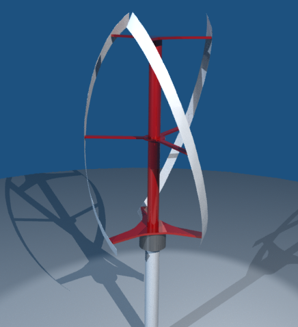
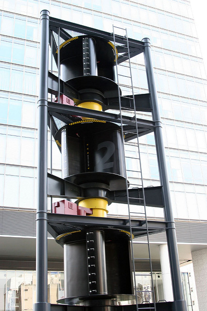

Vertical-Axis Wind Turbines
While clusters of horizontal-axis wind turbines are our primary weapon in the war to reduce greenhouse gas emissions to save the planet from the effects of global warming, there are other interesting wind turbine designs. Vertical-axis wind turbines (VAWT) come in a variety of shapes and sizes for those keen to take the path less travelled.
 Darrieus Vertical-Axis Wind TurbineImage courtesy of FloWind
Darrieus Vertical-Axis Wind TurbineImage courtesy of FloWind
CFD For Your Wind Turbine
Are you ready for a 30-day free trial of Caedium Professional?

The main advantage of a vertical-axis wind turbine over a horizontal-axis wind turbine is its insensitivity to wind direction and turbulence. A vertical-axis wind turbine can therefore be mounted closer to the ground, making it safer and cheaper to build and maintain. It still needs access to plenty of wind though. The major drawback of a vertical-axis wind turbine is the inefficiency of dragging each blade back through the wind on each half rotation. A well-located horizontal-axis wind turbine is continuously driven by the wind once aligned and can be up to twice as efficient as an ideally positioned vertical-axis wind turbine. Still, the simplicity and variety of vertical-axis wind turbines makes for interesting reading as outlined below.
Darrieus
Georges Darrieus was the French inventor of the Darrieus vertical-axis wind turbine or 'eggbeater windmill' in 1931 – manufactured by FloWind (no longer trading) for North American customers. A Darrieus is a high speed, low torque machine suitable for generating alternating current (AC) electricity. The device develops lift from 2 or 3 'C' shaped blades. A Darrieus is unable to self start, which necessitates either a manual push or a more elaborate starter mechanism.
Giromill
A Giromill (also known as an 'eggbeater windmill') uses the same principal as a Darrieus to capture wind energy, but uses 2 or 3 straight blades individually attached to a vertical axis.
 Giromill Vertical-Axis Wind TurbineLicense: GNU Free Documentation License, Stahlkocher
Giromill Vertical-Axis Wind TurbineLicense: GNU Free Documentation License, Stahlkocher
Helical Blades
By replacing the blades of a Giromill with helical blades wrapped around a vertical axis (in a DNA-like structure), it is possible to minimize the pulsating torque that can cause the main bearings to fail on Darrieus-derived designs.
Helical Blade Vertical-Axis Wind TurbineQuietrevolution Design
The original idea for this wind turbine was inspired by the Gorlov Helical Water Turbine, which in turn was originally inspired by the Darrieus wind turbine design.
Cycloturbine
Yet another variation of the Darrieus is the Cycloturbine, which is essentially a Giromill with variable angle-of-attack blades. By varying the blade angle as it rotates against the wind, the blade drag is minimized. This modification improves the overall efficiency of the device, but also increases its complexity. Also varying the blade angle during startup reduces the startup torque required and avoids the need for a starter.
Savonius
A Savonius vertical-axis wind turbine is a slow rotating, high torque machine that is ideal for driving pumps. Whereas most wind turbines use lift generated by airfoil-shaped blades to drive a rotor, the Savonius uses drag and therefore cannot rotate faster than the approaching wind speed.
Savonius Vertical-Axis Wind TurbineLicense: CC BY 2.0, OiMax
To feed the electricity grid, the relatively slow speed of a Savonius needs to be geared up to produce AC frequencies – increasing cost and reducing overall efficiency.
Few vertical-axis wind turbines, if any, are available to buy off-the-shelf for personal use. Still that's no barrier for those open to the challenge of building your own vertical-axis wind turbine – give it a whirl.
Feedback
Questions? Ideas? Problems?

Recent blog posts
- CFD Simulates Distant Past
- Background on the Caedium v6.0 Release
- Long-Necked Dinosaurs Succumb To CFD
- CFD Provides Insight Into Mystery Fossils
- Wind Turbine Design According to Insects
- Runners Discover Drafting
- Wind Tunnel and CFD Reveal Best Cycling Tuck
- Active Aerodynamics on the Lamborghini Huracán Performante
- Fluidic Logic
- Stonehenge Vortex Revealed as April Fools' Day Distortion Field
 Get our Blog feed
Get our Blog feed
Comments
Caedium Lenz2 VAWT Simulation
In our Download area we have a Caedium Lenz2 VAWT airflow simulation.
Vertical wind turbine
Horizontal wind turbines are larger and hence, more useful in rural areas with open spaces. If you are living in an urban or suburban area, you will want to opt for the vertical wind turbine. In fact, vertical wind turbines were specifically designed to address the unique issues associated with electricity production in urban or suburban settings where horizontal winds become vertical when encountering the face of a building. The helical shaped blades of the vertical wind turbine can make use of horizontal or vertical wind bursts blowing in from any direction.
Different types of Vertical Axis Wind Turbines (VAWT)
Vertical Axis Wind Turbines(VAWT) are getting popular over the traditional Horizontal Axis Wind Turbines (HAWT). There are three popular types of VAWT designs. They are;
For More Information visit
http://www.energybeta.com
Combine both Savonius Blade and Darrieus Blade
In addition to independent Savonius and Darrieus type blade itself installed, there is another VAWT combining Savonius and Darrieus. Combining both Savonius and Darrieus blade could produce high performance and efficiency because Savonius and Darrieus blade have their own advantages and drawbacks.
For example, Savonius blade is able to operate in the low wind speed and rotate at high-speed torsion, but its RPM is not enough to generate power. However, the RPM of Darrieus blade is high with the high wind speed and high rotation, and also using Darrieus Lift-Type blade is able to make low, even no noise, which is beneficial in the residential area, but its disadvantage is not easy to operate at low wind speed.
Therefore, combining both of Savonius and Darrieus blade VAWT is able to operate at low wind speed and produce high efficiency to transfer wind energy to electrical power, and if the blade, alternator, material have been particularly designed, selected, and processed like adding damper to reduce vibration and noise, the all wind turbine could produce high efficiency and also is able to be installed any landform or construction.
Request for more detail information
It looks like a great idea and I am very interesting to this kind of design.
Would you please kindly advise how to get the more detail information about it.
And, please let me know if there are any products in the market. If so, please show me some pictures of this kind of product for reference.
design of windmill
Sir,
This is student of mechanical enginerring department, uet lahore.I am doing project on windmill .would u like to tell , how can i start the idea, the design of wind turbine , the parameters for it. i would be thnakful for ur help .
thanx
Start with some free plans
Let’s not forget that you need a lot of wind to get any worthwhile energy out of any wind turbine. if you visit a wind farm it feels very windy even when the blades are turning quite slowly.
Maybe the answer is microgeneration and diy wind turbines? There are plenty of plans out there however it is always difficult to know how good the plan is that you may buy – price is not always a good indicator…
The best thing is to get hold of a few plans – maybe free ones – and then start to think about what type of generator you want to build. I also prefer VAWT plans because I can build them and modify them. Maybe a simple Vertical Axis model first and then you can always build a higher efficiency model. In my view build simple first and get some power then develop and build more.. Here is a link to a site with lots of plans available some are free so worth downloading just to see the scope of a project.
http://www.onetoremember.co.uk/xcart/wind.html
My vertical axis wind turbine
I like in a house at the outskirts of the city and we have here only fresh water and electricity available.
I was somehow happy to not use natural gas for residential heating because is expensive and being a one story house, the consumption of gas during the winter would make my energy bills very expensive.
I use now only electricity for everything inside the house including the heating/cooling system which is done by modern air conditioners with inverter.
I wanted to lower my electricity bill especially during the fall/winter seasons, so I ordered a pretty large vertical axis wind turbine that was installed in my back yard.
The turbine is built like a giromill and uses three straight blades.
When the wind reaches speeds of over 10 mph I can say that the turbine starts generating some energy.
In November 2018, I managed to generate about 300 KW with the turbine, which lowered my energy bill by 30%.
I ordered the turbine after reading an article about wind turbines at https://www.alternative-energies.net/how-do-wind-turbines-work/
I'm very interested to see what will the turbine do during the extremely cold winter months in January and February 2019.